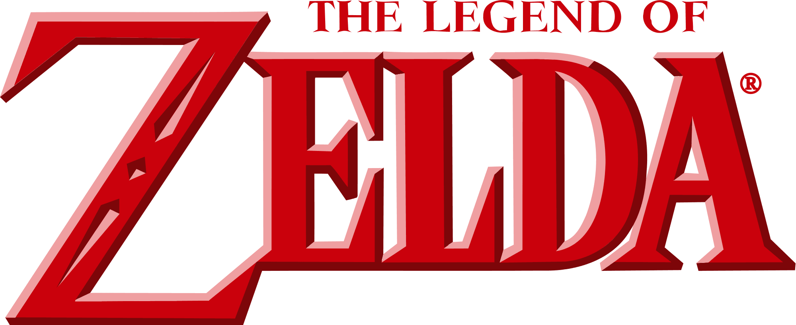
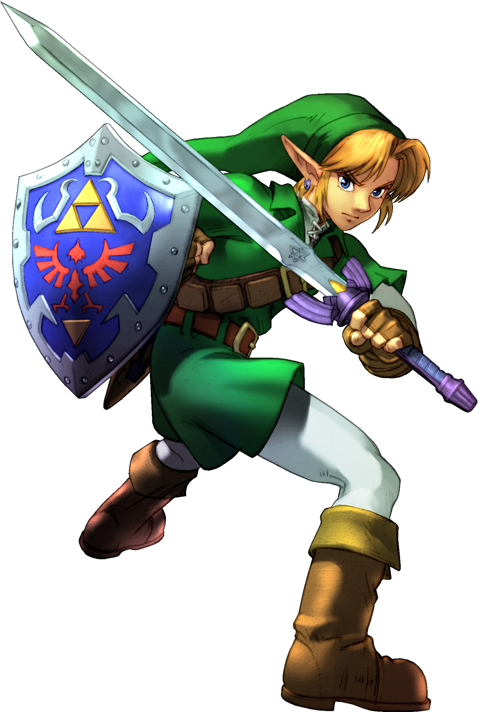
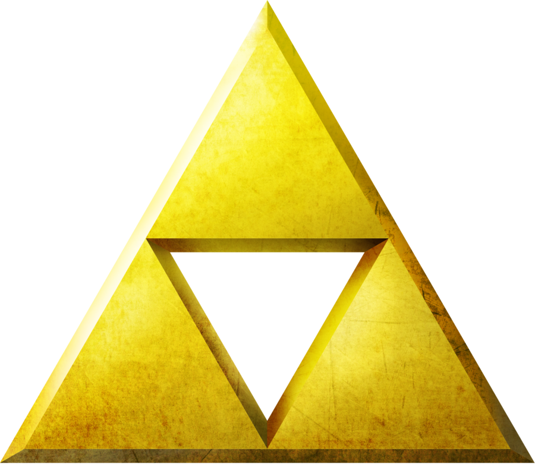

The Legend of Zelda
The Legend of Zelda es una franquicia de videojuegos creada por Nintendo en 1986 por los diseñadores Shigeru Miyamoto y Takashi Tezuka. La saga narra las aventuras de Link, un héroe que protege el reino de Hyrule y enfrenta distintas amenazas para salvar a la princesa Zelda. A lo largo de la serie, los jugadores exploran un mundo de fantasía lleno de misterios, criaturas y objetos mágicos, mientras viven historias que combinan acción, exploración y resolución de acertijos.

A lo largo de los años, la franquicia ha evolucionado con nuevas mecánicas, gráficos y mundos cada vez más amplios, manteniendo siempre su esencia de aventura y exploración. Los jugadores deben resolver acertijos, explorar mazmorras y derrotar enemigos para avanzar en la historia. Además, cada entrega introduce nuevas habilidades, armas y objetos que enriquecen la experiencia de juego y ofrecen diferentes formas de superar los desafíos. Títulos como Ocarina of Time, Breath of the Wild y Tears of the Kingdom son considerados algunos de los mejores videojuegos de la historia. Gracias a su innovación, su música, su narrativa y sus personajes memorables, The Legend of Zelda se ha convertido en una de las sagas más importantes e influyentes de la industria de los videojuegos, inspirando a numerosas franquicias y manteniendo una gran comunidad de seguidores en todo el mundo.
Link: El Héroe de Hyrule

Link es el protagonista indiscutible de la saga The Legend of Zelda y el portador de la Trifuerza del Valor. A lo largo de la cronología oficial, el personaje aparece en diferentes encarnaciones, cada una perteneciente a una época distinta de Hyrule. Aunque no siempre es la misma persona, todos los Link comparten un fuerte sentido del deber, un espíritu heroico y la determinación de proteger el reino frente a las fuerzas del mal. Su viaje suele comenzar como el de un joven común que, mediante el coraje y la perseverancia, termina convirtiéndose en el héroe destinado a enfrentar a Ganondorf u otras amenazas.
- Portador de la Trifuerza del Valor, símbolo de su valentía y determinación.
- Vestimenta característica, tradicionalmente una túnica verde y gorro puntiagudo, aunque en entregas recientes presenta atuendos variados.
- Reencarnación del héroe, representando el mismo legado a través de distintas épocas de la historia de Hyrule.
La Trifuerza

La Trifuerza es el símbolo sagrado más importante de The Legend of Zelda. Creada por las Diosas Doradas, representa el equilibrio entre tres virtudes esenciales. Cuando la Trifuerza se divide, cada fragmento elige a un portador que encarna una de estas cualidades.
- Poder: Representa la fuerza, la ambición y la capacidad de imponer la voluntad propia. Su portador habitual es Ganondorf, quien la utiliza para obtener un inmenso poder y dominar Hyrule.
- Sabiduría: Simboliza la inteligencia, el conocimiento y el buen juicio. Generalmente pertenece a la princesa Zelda, quien la emplea para proteger el reino y mantener el equilibrio.
- Valor: Representa el coraje, la determinación y el espíritu heroico. Está ligada a Link, el héroe elegido para enfrentar el mal y defender Hyrule con la Espada Maestra.